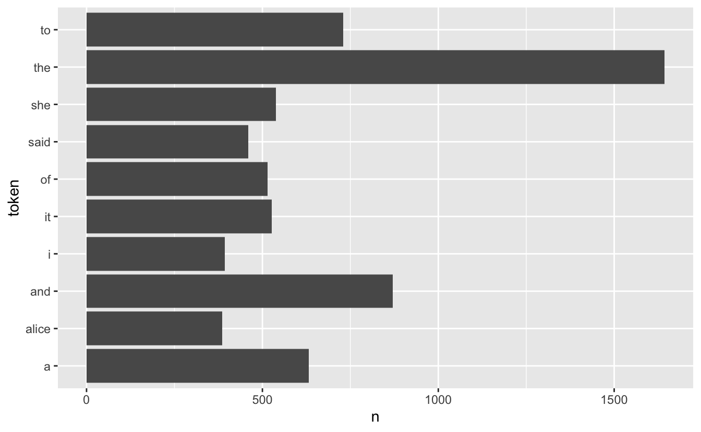
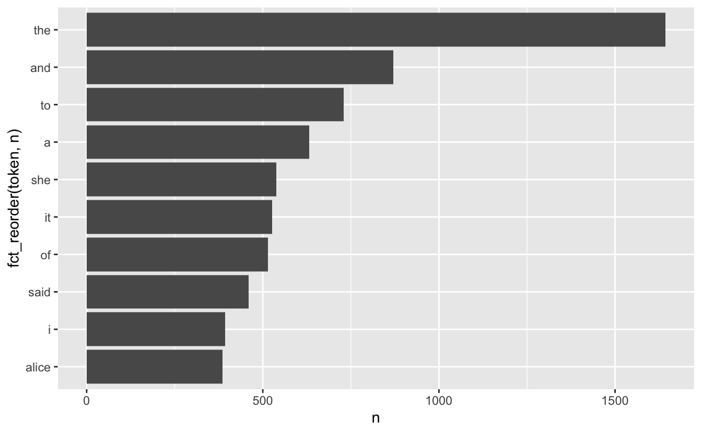
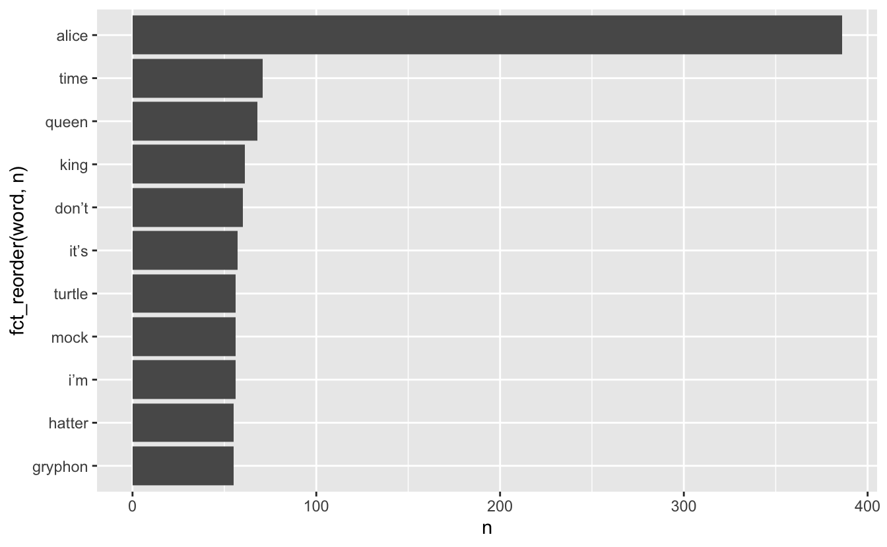
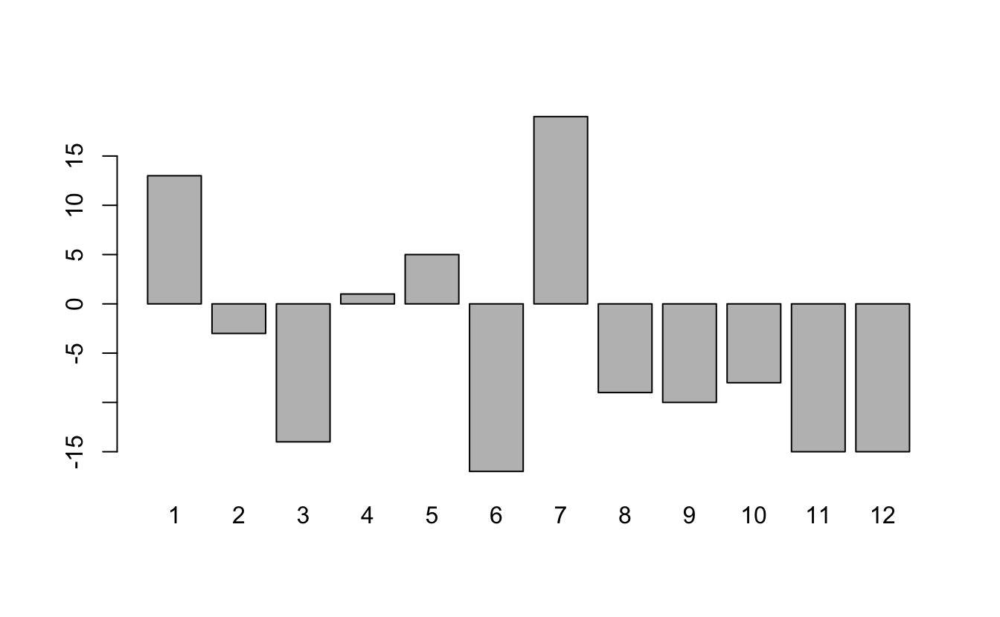
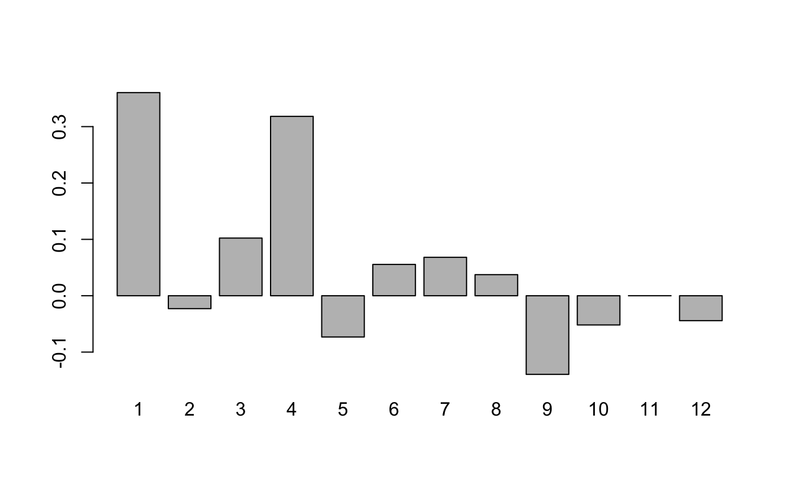

Week 6: Text Mining
PM 566: Introduction to Health Data Science
Acknowledgment
These slides were originally developed by Emil Hvitfeldt and modified by George G. Vega Yon and Kelly Street.
Plan for the week
- We will try to turn text into numbers
- Then use tidy principals to explore those numbers
Why tidytext?
Works seemlessly with ggplot2, dplyr and tidyr.
Alternatives:
R: quanteda, tm, koRpus
Python: nltk, Spacy, gensim
Alice’s Adventures in Wonderland
Download the alice dataset from https://github.com/USCbiostats/PM566/blob/main/data/alice.rds)
# A tibble: 3,351 × 3
text chapter chapter_name
<chr> <int> <chr>
1 "CHAPTER I." 1 CHAPTER I.
2 "Down the Rabbit-Hole" 1 CHAPTER I.
3 "" 1 CHAPTER I.
4 "" 1 CHAPTER I.
5 "Alice was beginning to get very tired of sitting by he… 1 CHAPTER I.
6 "bank, and of having nothing to do: once or twice she h… 1 CHAPTER I.
7 "the book her sister was reading, but it had no picture… 1 CHAPTER I.
8 "conversations in it, “and what is the use of a book,” … 1 CHAPTER I.
9 "“without pictures or conversations?”" 1 CHAPTER I.
10 "" 1 CHAPTER I.
# ℹ 3,341 more rowsTokenizing
Turning text into smaller units
In English:
- split by spaces
- more advanced algorithms
Spacy tokenizer

Turning the data into a tidy format
# A tibble: 26,687 × 3
chapter chapter_name token
<int> <chr> <chr>
1 1 CHAPTER I. chapter
2 1 CHAPTER I. i
3 1 CHAPTER I. down
4 1 CHAPTER I. the
5 1 CHAPTER I. rabbit
6 1 CHAPTER I. hole
7 1 CHAPTER I. alice
8 1 CHAPTER I. was
9 1 CHAPTER I. beginning
10 1 CHAPTER I. to
# ℹ 26,677 more rowsWords as a unit
Now that we have words as the observation unit we can use the dplyr toolbox.
Using dplyr verbs
# A tibble: 26,687 × 3
chapter chapter_name token
<int> <chr> <chr>
1 1 CHAPTER I. chapter
2 1 CHAPTER I. i
3 1 CHAPTER I. down
4 1 CHAPTER I. the
5 1 CHAPTER I. rabbit
6 1 CHAPTER I. hole
7 1 CHAPTER I. alice
8 1 CHAPTER I. was
9 1 CHAPTER I. beginning
10 1 CHAPTER I. to
# ℹ 26,677 more rowsUsing dplyr verbs
Using dplyr verbs
Using dplyr verbs
Using dplyr verbs
library(dplyr)
alice |>
unnest_tokens(token, text) |>
group_by(chapter) |>
count(token) |>
top_n(10, n)# A tibble: 122 × 3
# Groups: chapter [12]
chapter token n
<int> <chr> <int>
1 1 a 52
2 1 alice 27
3 1 and 65
4 1 i 30
5 1 it 62
6 1 of 43
7 1 she 79
8 1 the 92
9 1 to 75
10 1 was 52
# ℹ 112 more rowsdplyr verbs and ggplot2
dplyr verbs and ggplot2
Stop words
A lot of the words don’t tell us very much. Words such as “the”, “and”, “at” and “for” appear a lot in English text but doesn’t add much to the context.
Words such as these are called stop words
For more information about differences in stop words and when to remove them read this chapter: https://smltar.com/stopwords
Stop words in tidytext
tidytext comes with a built-in data.frame of stop words
Stop word lexicons
snowball stopwords
[1] "i" "me" "my" "myself" "we"
[6] "our" "ours" "ourselves" "you" "your"
[11] "yours" "yourself" "yourselves" "he" "him"
[16] "his" "himself" "she" "her" "hers"
[21] "herself" "it" "its" "itself" "they"
[26] "them" "their" "theirs" "themselves" "what"
[31] "which" "who" "whom" "this" "that"
[36] "these" "those" "am" "is" "are"
[41] "was" "were" "be" "been" "being"
[46] "have" "has" "had" "having" "do"
[51] "does" "did" "doing" "would" "should"
[56] "could" "ought" "i'm" "you're" "he's"
[61] "she's" "it's" "we're" "they're" "i've"
[66] "you've" "we've" "they've" "i'd" "you'd"
[71] "he'd" "she'd" "we'd" "they'd" "i'll"
[76] "you'll" "he'll" "she'll" "we'll" "they'll"
[81] "isn't" "aren't" "wasn't" "weren't" "hasn't"
[86] "haven't" "hadn't" "doesn't" "don't" "didn't"
[91] "won't" "wouldn't" "shan't" "shouldn't" "can't"
[96] "cannot" "couldn't" "mustn't" "let's" "that's"
[101] "who's" "what's" "here's" "there's" "when's"
[106] "where's" "why's" "how's" "a" "an"
[111] "the" "and" "but" "if" "or"
[116] "because" "as" "until" "while" "of"
[121] "at" "by" "for" "with" "about"
[126] "against" "between" "into" "through" "during"
[131] "before" "after" "above" "below" "to"
[136] "from" "up" "down" "in" "out"
[141] "on" "off" "over" "under" "again"
[146] "further" "then" "once" "here" "there"
[151] "when" "where" "why" "how" "all"
[156] "any" "both" "each" "few" "more"
[161] "most" "other" "some" "such" "no"
[166] "nor" "not" "only" "own" "same"
[171] "so" "than" "too" "very" Duplicated stopwords
down would a about above
4 4 3 3 3
after again against all an
3 3 3 3 3
and any are as at
3 3 3 3 3
be because been before being
3 3 3 3 3
between both but by cannot
3 3 3 3 3
could did do does during
3 3 3 3 3
each few for from further
3 3 3 3 3
had has have having he
3 3 3 3 3
her here herself high him
3 3 3 3 3
himself his how i if
3 3 3 3 3
in into is it its
3 3 3 3 3
itself me more most my
3 3 3 3 3
myself new no not of
3 3 3 3 3
off on once only or
3 3 3 3 3
other our out over right
3 3 3 3 3
same she should some still
3 3 3 3 3
such than that the their
3 3 3 3 3
them then there these they
3 3 3 3 3
this those through to too
3 3 3 3 3
under until up very was
3 3 3 3 3
we were what when where
3 3 3 3 3
which while who why with
3 3 3 3 3
you your yours across almost
3 3 3 2 2
alone along already also although
2 2 2 2 2
always am among another anybody
2 2 2 2 2
anyone anything anywhere aren't around
2 2 2 2 2
ask asking away became become
2 2 2 2 2
becomes behind below best better
2 2 2 2 2
came can can't certain certainly
2 2 2 2 2
clearly come couldn't didn't different
2 2 2 2 2
doesn't doing don't done either
2 2 2 2 2
enough even ever every everybody
2 2 2 2 2
everyone everything everywhere far first
2 2 2 2 2
four get gets given gives
2 2 2 2 2
go going got hadn't hasn't
2 2 2 2 2
haven't he's here's hers however
2 2 2 2 2
i'd i'll i'm i've isn't
2 2 2 2 2
it's just keep keeps know
2 2 2 2 2
known knows last later least
2 2 2 2 2
less let let's like likely
2 2 2 2 2
many may might mostly much
2 2 2 2 2
must necessary need needs never
2 2 2 2 2
next nobody non noone nor
2 2 2 2 2
nothing now nowhere often old
2 2 2 2 2
one others ought ours ourselves
2 2 2 2 2
own per perhaps possible quite
2 2 2 2 2
rather really said saw say
2 2 2 2 2
says second see seem seemed
2 2 2 2 2
seeming seems several shall shouldn't
2 2 2 2 2
since so somebody someone something
2 2 2 2 2
somewhere sure take taken that's
2 2 2 2 2
theirs themselves there's therefore they'd
2 2 2 2 2
they'll they're they've think though
2 2 2 2 2
three thus together took toward
2 2 2 2 2
two upon us use used
2 2 2 2 2
uses want wants wasn't way
2 2 2 2 2
we'd we'll we're we've well
2 2 2 2 2
went weren't what's where's whether
2 2 2 2 2
who's whole whom whose will
2 2 2 2 2
within without won't wouldn't yet
2 2 2 2 2
you'd you'll you're you've yourself
2 2 2 2 2
yourselves a's able according accordingly
2 1 1 1 1
actually afterwards ain't allow allows
1 1 1 1 1
amongst anyhow anyway anyways apart
1 1 1 1 1
appear appreciate appropriate area areas
1 1 1 1 1
aside asked asks associated available
1 1 1 1 1
awfully b back backed backing
1 1 1 1 1
backs becoming beforehand began beings
1 1 1 1 1
believe beside besides beyond big
1 1 1 1 1
brief c c'mon c's cant
1 1 1 1 1
case cases cause causes changes
1 1 1 1 1
clear co com comes concerning
1 1 1 1 1
consequently consider considering contain containing
1 1 1 1 1
contains corresponding course currently d
1 1 1 1 1
definitely described despite differ differently
1 1 1 1 1
downed downing downs downwards e
1 1 1 1 1
early edu eg eight else
1 1 1 1 1
elsewhere end ended ending ends
1 1 1 1 1
entirely especially et etc evenly
1 1 1 1 1
ex exactly example except f
1 1 1 1 1
face faces fact facts felt
1 1 1 1 1
fifth find finds five followed
1 1 1 1 1
following follows former formerly forth
1 1 1 1 1
full fully furthered furthering furthermore
1 1 1 1 1
furthers g gave general generally
1 1 1 1 1
getting give goes gone good
1 1 1 1 1
goods gotten great greater greatest
1 1 1 1 1
greetings group grouped grouping groups
1 1 1 1 1
h happens hardly he'd he'll
1 1 1 1 1
hello help hence hereafter hereby
1 1 1 1 1
herein hereupon hi higher highest
1 1 1 1 1
hither hopefully how's howbeit ie
1 1 1 1 1
ignored immediate important inasmuch inc
1 1 1 1 1
indeed indicate indicated indicates inner
1 1 1 1 1
insofar instead interest interested interesting
1 1 1 1 1
interests inward it'd it'll j
1 1 1 1 1
k kept kind knew l
1 1 1 1 1
large largely lately latest latter
1 1 1 1 1
latterly lest lets liked little
1 1 1 1 1
long longer longest look looking
1 1 1 1 1
looks ltd m made mainly
1 1 1 1 1
make making man maybe mean
1 1 1 1 1
meanwhile member members men merely
1 1 1 1 1
moreover mr mrs mustn't n
1 1 1 1 1
name namely nd near nearly
1 1 1 1 1
needed needing neither nevertheless newer
1 1 1 1 1
newest nine none normally novel
1 1 1 1 1
number numbers o obviously oh
1 1 1 1 1
ok okay older oldest ones
1 1 1 1 1
onto open opened opening opens
1 1 1 1 1
order ordered ordering orders otherwise
1 1 1 1 1
outside overall p part parted
1 1 1 1 1
particular particularly parting parts place
1 1 1 1 1
placed places please plus point
1 1 1 1 1
pointed pointing points present presented
1 1 1 1 1
presenting presents presumably probably problem
1 1 1 1 1
problems provides put puts q
1 1 1 1 1
que qv r rd re
1 1 1 1 1
reasonably regarding regardless regards relatively
1 1 1 1 1
respectively room rooms s saying
1 1 1 1 1
secondly seconds seeing seen sees
1 1 1 1 1
self selves sensible sent serious
1 1 1 1 1
seriously seven shan't she'd she'll
1 1 1 1 1
she's show showed showing shows
1 1 1 1 1
side sides six small smaller
1 1 1 1 1
smallest somehow sometime sometimes somewhat
1 1 1 1 1
soon sorry specified specify specifying
1 1 1 1 1
state states sub sup t
1 1 1 1 1
t's tell tends th thank
1 1 1 1 1
thanks thanx thats thence thereafter
1 1 1 1 1
thereby therein theres thereupon thing
1 1 1 1 1
things thinks third thorough thoroughly
1 1 1 1 1
thought thoughts throughout thru today
1 1 1 1 1
towards tried tries truly try
1 1 1 1 1
trying turn turned turning turns
1 1 1 1 1
twice u un unfortunately unless
1 1 1 1 1
unlikely unto useful using usually
1 1 1 1 1
uucp v value various via
1 1 1 1 1
viz vs w wanted wanting
1 1 1 1 1
ways welcome wells whatever when's
1 1 1 1 1
whence whenever whereafter whereas whereby
1 1 1 1 1
wherein whereupon wherever whither whoever
1 1 1 1 1
why's willing wish wonder work
1 1 1 1 1
worked working works x y
1 1 1 1 1
year years yes young younger
1 1 1 1 1
youngest z zero
1 1 1 Removing stopwords
We can use an anti_join() to remove the tokens that also appear in the stop_words data.frame
Anti-join with same variable name
Stop words removed
Which words appear together?
ngrams are sets of n consecutive words and we can count these to see which words appear together most frequently.
- ngrams with n = 1 are called “unigrams”: “which”, “words”, “appear”, “together”
- ngrams with n = 2 are called “bigrams”: “which words”, “words appear”, “appear together”
- ngrams with n = 3 are called “trigrams”: “which words appear”, “words appear together”
Which words appear together?
We can extract bigrams using unnest_ngrams() with n = 2
# A tibble: 25,170 × 3
chapter chapter_name ngram
<int> <chr> <chr>
1 1 CHAPTER I. chapter i
2 1 CHAPTER I. down the
3 1 CHAPTER I. the rabbit
4 1 CHAPTER I. rabbit hole
5 1 CHAPTER I. <NA>
6 1 CHAPTER I. <NA>
7 1 CHAPTER I. alice was
8 1 CHAPTER I. was beginning
9 1 CHAPTER I. beginning to
10 1 CHAPTER I. to get
# ℹ 25,160 more rowsWhich words appear together?
Tallying up the bigrams still shows a lot of stop words, but it is able to pick up some common phrases:
Which words appear together?
alice |>
unnest_ngrams(ngram, text, n = 2) |>
separate(ngram, into = c("word1", "word2"), sep = " ") |>
select(word1, word2)# A tibble: 25,170 × 2
word1 word2
<chr> <chr>
1 chapter i
2 down the
3 the rabbit
4 rabbit hole
5 <NA> <NA>
6 <NA> <NA>
7 alice was
8 was beginning
9 beginning to
10 to get
# ℹ 25,160 more rowsalice |>
unnest_ngrams(ngram, text, n = 2) |>
separate(ngram, into = c("word1", "word2"), sep = " ") |>
select(word1, word2) |>
filter(word1 == "alice")# A tibble: 336 × 2
word1 word2
<chr> <chr>
1 alice was
2 alice think
3 alice started
4 alice after
5 alice had
6 alice to
7 alice had
8 alice had
9 alice soon
10 alice began
# ℹ 326 more rowsWhat about when the first word is “alice”?
alice |>
unnest_ngrams(ngram, text, n = 2) |>
separate(ngram, into = c("word1", "word2"), sep = " ") |>
select(word1, word2) |>
filter(word1 == "alice") |>
count(word2, sort = TRUE)# A tibble: 133 × 2
word2 n
<chr> <int>
1 and 18
2 was 17
3 thought 12
4 as 11
5 said 11
6 could 10
7 had 10
8 did 9
9 in 9
10 to 9
# ℹ 123 more rowsWhat about when the second word is “alice”?
alice |>
unnest_ngrams(ngram, text, n = 2) |>
separate(ngram, into = c("word1", "word2"), sep = " ") |>
select(word1, word2) |>
filter(word2 == "alice") |>
count(word1, sort = TRUE)# A tibble: 106 × 2
word1 n
<chr> <int>
1 said 112
2 thought 25
3 to 22
4 and 15
5 poor 11
6 cried 7
7 at 6
8 so 6
9 that 5
10 exclaimed 3
# ℹ 96 more rowsTF-IDF
TF: Term frequency
IDF: Inverse document frequency
TF-IDF: product of TF and IDF
TF gives weight to terms that appear a lot, IDF gives weight to terms that appears in a few documents
TF-IDF with tidytext
# A tibble: 26,687 × 3
text chapter chapter_name
<chr> <int> <chr>
1 chapter 1 CHAPTER I.
2 i 1 CHAPTER I.
3 down 1 CHAPTER I.
4 the 1 CHAPTER I.
5 rabbit 1 CHAPTER I.
6 hole 1 CHAPTER I.
7 alice 1 CHAPTER I.
8 was 1 CHAPTER I.
9 beginning 1 CHAPTER I.
10 to 1 CHAPTER I.
# ℹ 26,677 more rowsTF-IDF with tidytext
TF-IDF with tidytext
# A tibble: 7,549 × 6
text chapter n tf idf tf_idf
<chr> <int> <int> <dbl> <dbl> <dbl>
1 _alice’s 2 1 0.000471 2.48 0.00117
2 _all 12 1 0.000468 2.48 0.00116
3 _all_ 12 1 0.000468 2.48 0.00116
4 _and 9 1 0.000435 2.48 0.00108
5 _are_ 4 1 0.000375 1.10 0.000411
6 _are_ 6 1 0.000382 1.10 0.000420
7 _are_ 8 1 0.000400 1.10 0.000439
8 _are_ 9 1 0.000435 1.10 0.000478
9 _at 9 1 0.000435 2.48 0.00108
10 _before 12 1 0.000468 2.48 0.00116
# ℹ 7,539 more rowsTF-IDF with tidytext
alice |>
unnest_tokens(text, text) |>
count(text, chapter) |>
bind_tf_idf(text, chapter, n) |>
arrange(desc(tf_idf))# A tibble: 7,549 × 6
text chapter n tf idf tf_idf
<chr> <int> <int> <dbl> <dbl> <dbl>
1 dormouse 7 26 0.0112 1.79 0.0201
2 hatter 7 32 0.0138 1.39 0.0191
3 mock 10 28 0.0136 1.39 0.0189
4 turtle 10 28 0.0136 1.39 0.0189
5 gryphon 10 31 0.0151 1.10 0.0166
6 turtle 9 27 0.0117 1.39 0.0163
7 caterpillar 5 25 0.0115 1.39 0.0159
8 dance 10 13 0.00632 2.48 0.0157
9 mock 9 26 0.0113 1.39 0.0157
10 hatter 11 21 0.0110 1.39 0.0153
# ℹ 7,539 more rowsSentiment Analysis
Also known as “opinion mining,” sentiment analysis is a way in which we can use computers to attempt to understand the feelings conveyed by a piece of text. This generally relies on a large, human-compiled database of words with known associations such as “positive” and “negative” or specific feelings like “joy”, “surprise”, “disgust”, etc.
Sentiment Analysis

Sentiment Lexicons
The tidytext and textdata packages provide access to three different databases of words and their associated sentiments (known as “sentiment lexicons”). Obviously, none of these can be perfect, as there is no “correct” way to quantify feelings, but they all attempt to capture different elements of how a text makes you feel.
The readily available lexicons are:
afinnfrom Finn Årup Nielsenbingfrom Bing Liu and collaboratorsnrcfrom Saif Mohammad and Peter Turney
Sentiment Lexicons - bing
The bing lexicon contains a large list of words and a binary association, either “positive” or “negative”:
# A tibble: 6,786 × 2
word sentiment
<chr> <chr>
1 2-faces negative
2 abnormal negative
3 abolish negative
4 abominable negative
5 abominably negative
6 abominate negative
7 abomination negative
8 abort negative
9 aborted negative
10 aborts negative
# ℹ 6,776 more rowsSentiment Lexicons - afinn
The afinn lexicon goes slightly further, assigning words a value between -5 and 5 that represents their positivity or negativity.
Sentiment Lexicons - nrc
The nrc lexicon takes a different approach and assigns each word an associated sentiment. Some words appear more than once because they have multiple associations:
Sentiment Analysis
We can use one of these databases to analyze Alice’s Adventures in Wonderland by breaking the text down into words and combining the result with a lexicon. Let’s use bing to assign “positive” and “negative” labels to as many words as possible in the book. (Note that this time the variable created by unnest_tokens is called word, to match the column name in bing).
# A tibble: 1,409 × 4
chapter chapter_name word sentiment
<int> <chr> <chr> <chr>
1 1 CHAPTER I. tired negative
2 1 CHAPTER I. well positive
3 1 CHAPTER I. hot positive
4 1 CHAPTER I. stupid negative
5 1 CHAPTER I. pleasure positive
6 1 CHAPTER I. worth positive
7 1 CHAPTER I. trouble negative
8 1 CHAPTER I. remarkable positive
9 1 CHAPTER I. burning negative
10 1 CHAPTER I. fortunately positive
# ℹ 1,399 more rowsSentiment Analysis
We can now group and summarize this new dataset the same as any other. For example, let’s look at the sentiment by chapter. We’ll do this by counting the number of “positive” words and subtracting the number of “negative” words:
Sentiment Analysis
Sentiment Analysis
Sentiment Analysis
Alternatively, we could use the afinn lexicon and quantify the “sentiment” of each chapter by the average of all words with numeric associations:
Sentiment Analysis
Sentiment Analysis
Similarly, we can find the most frequent sentiment association in the nrc lexicon for each chapter. Unfortunately, for all chapters, the most frequent sentiment association ends up being the rather bland “positive” or “negative”:
alice |>
unnest_tokens(word, text) |>
inner_join(get_sentiments("nrc")) |>
group_by(chapter) |>
summarise(sentiment = names(which.max(table(sentiment))))# A tibble: 12 × 2
chapter sentiment
<int> <chr>
1 1 positive
2 2 positive
3 3 positive
4 4 positive
5 5 positive
6 6 negative
7 7 positive
8 8 positive
9 9 positive
10 10 positive
11 11 positive
12 12 positive Sentiment Analysis
We’ll try to spice things up by removing “positive” and “negative” from the nrc lexicon:
Sentiment Analysis
Now we see a lot of “anticipation”:
alice |>
unnest_tokens(word, text) |>
inner_join(nrc_fun) |>
group_by(chapter) |>
summarise(sentiment = names(which.max(table(sentiment))))# A tibble: 12 × 2
chapter sentiment
<int> <chr>
1 1 anticipation
2 2 anticipation
3 3 sadness
4 4 anticipation
5 5 trust
6 6 anticipation
7 7 anticipation
8 8 anticipation
9 9 trust
10 10 joy
11 11 anticipation
12 12 trust